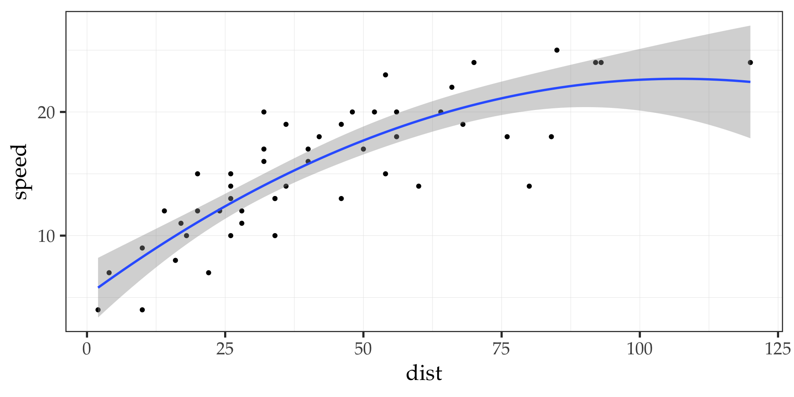
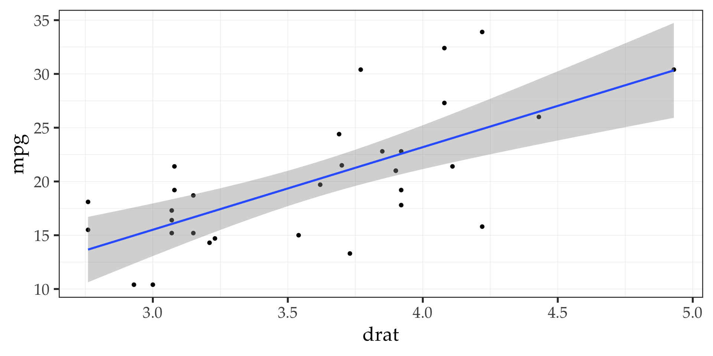

Quarto Rutgers theme
Port of the ru_xaringan theme using quarto markdown
Joseph V. Casillas
Rutgers University
2023-04-14
The basics
Check me out
Standard markdown stuff
- Similar to
xaringan, revealjs uses # for headers - One difference is that they automatically generate a new slide
- Two (##) for a level two header at the top of a slide
- One (#) is centered vertically (good for a section divider)
- All other basic markdown syntax works the same:
h3 level
h4 level
Incremental slides
To make an ordered or unordered list incremental you have to use css
::: {.incremental}
- First this one
- Then this one
:::- First this one
- Then this one
::: {.incremental}
1. First this one
2. Then this one
:::- First this one
- Then this one
Multiple columns
You can make multiple columns of any width using css as well
:::: {.columns}
::: {.column width="40%"}
Left column
:::
::: {.column width="60%"}
Right column
:::
::::Left column
Right column
Some new stuff
Long slides?
You can use css to make text smaller with {.smaller}
## Slide Title {.smaller}- this
- is
- ideal
- for
- really
- long
- slides
- but
- it’s
- usually
- better to avoid that
Long slides? (again)
Another option is to make the individual slide scrollable using {.scrollable}
- this
- is
- ideal
- for
- really
- long
- slides
- but
- it’s
- usually
- better
- to
- avoid
- that
Don’t forget your speaker notes
You can get your speaker notes all set up using
::: {.notes}
Speaker notes go here.
:::Click “s” to see some notes
Asides
You can include asides, but they are kind of weird.
::: aside
This is an aside
:::Footnotes
I think footnotes are probably more useful 1
You can make them endnotes (ew) like this:
---
format:
revealjs:
reference-location: document
---Custom footers
You can add a custom footer to any slide using
::: footer
This is my footer
:::This is my footer
Export to pdf
You can use pagedown::chrome_print("path-to-file.html") to export the slides to pdf
Another option is to type ‘e’
iframes
You can easily embed iframes (see next slide)
- the website is embedded in the slide
- it defaults to full screen
- set
background-interactiveto true if you need to actually use the page
More iframes
They don’t have to take up the whole screen (insert using {=html} chunk):
preview links
You can see the content of a link without opening a separate page by setting preview-links: true
Sizing things up
::: {.r-fit-text}
Big Text
:::Big Text
Stretching imgs
{.r-stretch}
Spans
All about spans
In
xaringan, one can use.[]to apply some type of formatting to text, i.e.,.red[red text]In reveal, this works in a similar way
[in a similar way]{style="color: #cc0033;"}
- The Rutgers theme as a class for emphasizing in red
[red]{.emph}
Animations
Animations explained
## {auto-animate=true}
::: {style="margin-top: 100px;"}
Animating content
:::
## {auto-animate=true}
::: {style="margin-top: 200px; font-size: 3em; color: red;"}
Animating content
:::Look at me
Look at you
Look at this
Look at this
You can animate code chunks too
## {auto-animate="true"}
```r
# Fill in the spot we created for a plot
output$phonePlot <- renderPlot({
# Render a barplot
})
```
## {auto-animate=true}
```r
# Fill in the spot we created for a plot
output$phonePlot <- renderPlot({
# Render a barplot
barplot(WorldPhones[,input$region]*1000,
main=input$region,
ylab="Number of Telephones",
xlab="Year")
})
```cool
is
cool
animation
is
cool
Fragments
Fade in
Fade out
Highlight red
Fade in, then out
Slide up while fading in
Diagrams
flowchart LR
A[qmd] --> B(Knitr)
A[qmd] --> C(Jupyter)
B(Knitr) --> D[md]
C(Jupyter) --> D[md]
D[md] --> E(pandoc)
E(pandoc) --> F(HTML)
E(pandoc) --> G(PDF)
E(pandoc) --> H(Word)
E(pandoc) --> I{and more}
flowchart LR
A[write] --> B(submit)
B(submit) --> C(Peer review)
C(Peer review) --> D(Revise)
C(Peer review) --> E(Accept)
C(Peer review) --> F{Reject}
D(Revise) --> B(submit)
gantt title A Gantt Diagram dateFormat YYYY-MM-DD section Collect data In person data :a1, 2023-01-01, 30d Online data :after a1, 20d section Write paper First draft :2023-01-12, 12d Revisions :24d
Dot diagrams
Code stuff
Standard slide with R code
- You can highlight code using
code-line-numbersin the knitr chunk options - If you include pipes, e.g.,
code-line-numbers: "|5|"they will be highlighted incrementally (nice!) - Using
output-location:(fragment, slide, column, column-fragment) controls when and where the output of the code is displayed
library("tidyverse")
ggplot(cars) +
aes(x = dist, y = speed) +
geom_point() +
geom_smooth(method = 'lm', formula = y ~ poly(x, 2)) +
theme_bw(base_family = "Palatino", base_size = 20) +
theme(
panel.grid.major = element_line(colour = 'grey90', size = 0.15),
panel.grid.minor = element_line(colour = 'grey90', size = 0.15)
)Standard slide with R code

Tabsets
You can use tabsets pretty easily
::: {.panel-tabset}
### Tab A
Content for `Tab A`
### Tab B
Content for `Tab B`
:::(example on next slide)
plot_tabs <- mtcars |>
ggplot() +
aes(x = drat, y = mpg) +
geom_point() +
geom_smooth(method = lm, formula = "y ~ x") +
theme_bw(base_family = "Palatino", base_size = 20) +
theme(
panel.grid.major = element_line(colour = 'grey90', size = 0.15),
panel.grid.minor = element_line(colour = 'grey90', size = 0.15)
)
Linguistics stuff
IPA symbols work in unicode
/ʃæ.ˈriŋ.gæn/ i.e.,
[/ʃæ.ˈriŋ.gæn/]{.ipa}a æ ɑ ɒ ɐ b ɓ β ʙ c ç d ɖ ɗ d͡z d͡ʑ d͡ʒ e ɘ ɛ ɜ ɞ ə f ɸ g ɡ ɠ ɢ ʛ ɰ h ɦ ħ ɧ ɥ ʜ i ɨ ɪ j ʝ ɟ ʄ k l ɫ ɬ ɮ ɭ ʟ m ɱ n ɳ ɲ ŋ ɴ o ø ɵ ɔ œ ɶ p q r ɹ ɾ ɽ ɻ ɺ ʁ ʀ s ʂ ɕ ʃ t ʈ t͡s t͡ʂ t͡ʃ u ʉ ʊ ɯ ʌ v ⱱ ʋ w ʍ x ɣ χ y ʏ ʎ z ʐ ʑ ʒ θ ð ʔ ʡ ʕ ʢ ʘ ǀ ǃ ǂ ǁ
Diacritics: e̟ e̘ e̺ e̤ ë e̪ e̯ ĕ e̻ e̼ e̞ e̽ ẽ e̝ e̠ e̙ e˞ e̜ e̹ e̩ t͡s e̚ ḛ e̬ e̥ ˈ ˌ ː ˑ ʰ ʷ ˡ ⁿ ʲ ˤ ˠ ˥ ˦ ˧ ˨ ˩
Joined affricates: ʦ ʨ ʧ ʣ ʥ ʤ
Clean tables
- See Table 1.
| Word | Phonology | Phonetics |
|---|---|---|
| casa | /ˈka.sa/ | [ˈka.sa] |
| taco (Sp.) | /ˈta.ko/ | [ˈta.ko] |
| taco (Eng.) | /ˈta.ko/ | [ˈtha.ko] |
Extras
Social embeds: Twitter
Embed a tweet using:
Social embeds: Vimeo
Social embeds: YouTube
QR codes
Finishing up
This is the final slide
you can add your email, twitter, github, etc. info here
Here is an example:
| joseph.casillas@rutgers.edu | |
| jvcasillas.com/quarto-rutgers-theme | |
| @jvcasill | |
| @jvcasillas |
Social embeds: Github gists
Embed a gist using: